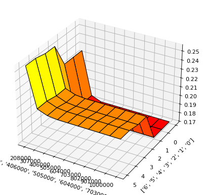

Partial Dependence for 2 Features Explainer Demo
This example demonstrates how to interpret a model using the H2O Eval Studio library and retrieve the data and partial dependence plot for 2 featues.
[1]:
import logging
import os
import daimojo
import datatable
import webbrowser
from h2o_sonar import interpret
from h2o_sonar.lib.api import commons, explainers
from h2o_sonar.lib.api.models import ModelApi
from h2o_sonar.explainers.pd_2_features_explainer import PdFor2FeaturesExplainer
[2]:
# dataset
dataset_path = "../../data/predictive/creditcard.csv"
target_col = "default payment next month"
# model
mojo_path = "../../data/predictive/models/creditcard-binomial.mojo"
mojo_model = daimojo.model(mojo_path)
model = ModelApi().create_model(
model_src=mojo_model,
target_col=target_col,
used_features=list(mojo_model.feature_names),
)
# results
results_location = "./results"
os.makedirs(results_location, exist_ok=True)
[3]:
# explainer description
interpret.describe_explainer(PdFor2FeaturesExplainer)
[3]:
{'id': 'h2o_sonar.explainers.pd_2_features_explainer.PdFor2FeaturesExplainer',
'name': 'PdFor2FeaturesExplainer',
'display_name': 'Partial Dependence Plot for Two Features',
'tagline': 'PdFor2FeaturesExplainer.',
'description': 'Partial dependence for 2 features portrays the average\nprediction behavior of a model across the domains of two input variables\ni.e. interaction of feature tuples with the prediction. While PD for one feature\nproduces 2D plot, PD for two features produces 3D plots. This explainer plots PD for\ntwo features using heatmap, contour 3D or surface 3D.\n',
'brief_description': 'PdFor2FeaturesExplainer.',
'model_types': ['iid', 'time_series'],
'can_explain': ['regression', 'binomial'],
'explanation_scopes': ['global_scope'],
'explanations': [{'explanation_type': 'global-partial-dependence',
'name': 'PartialDependenceExplanation',
'category': '',
'scope': 'global',
'has_local': '',
'formats': []}],
'keywords': ['is_slow'],
'parameters': [{'name': 'sample_size',
'description': 'Sample size for Partial Dependence Plot of 2 features.',
'comment': '',
'type': 'int',
'val': 25000,
'predefined': [],
'tags': [],
'min_': 0.0,
'max_': 0.0,
'category': ''},
{'name': 'max_features',
'description': 'Partial Dependence Plot number of features.',
'comment': '',
'type': 'int',
'val': 3,
'predefined': [],
'tags': [],
'min_': 0.0,
'max_': 0.0,
'category': ''},
{'name': 'features',
'description': 'List of features from which to choose pairs to compute PD for two features.',
'comment': '',
'type': 'list',
'val': None,
'predefined': [],
'tags': ['SOURCE_DATASET_COLUMN_NAMES'],
'min_': 0.0,
'max_': 0.0,
'category': ''},
{'name': 'grid_resolution',
'description': 'Partial Dependence Plot observations per bin (number of equally spaced points used to create bins).',
'comment': '',
'type': 'int',
'val': 10,
'predefined': [],
'tags': [],
'min_': 0.0,
'max_': 0.0,
'category': ''},
{'name': 'oor_grid_resolution',
'description': 'Partial Dependence Plot number of out of range bins.',
'comment': '',
'type': 'int',
'val': 0,
'predefined': [],
'tags': [],
'min_': 0.0,
'max_': 0.0,
'category': ''},
{'name': 'quantile-bin-grid-resolution',
'description': 'Partial Dependence Plot quantile binning (total quantile points used to create bins).',
'comment': '',
'type': 'int',
'val': 0,
'predefined': [],
'tags': [],
'min_': 0.0,
'max_': 0.0,
'category': ''},
{'name': 'plot_type',
'description': 'Plot type.',
'comment': '',
'type': 'str',
'val': 'heatmap',
'predefined': ['heatmap', 'contour-3d', 'surface-3d'],
'tags': [],
'min_': 0.0,
'max_': 0.0,
'category': ''}],
'metrics_meta': []}
Interpretation
[4]:
interpretation = interpret.run_interpretation(
dataset=dataset_path,
model=model,
target_col=target_col,
results_location=results_location,
log_level=logging.INFO,
explainers=[
commons.ExplainerToRun(
explainer_id=PdFor2FeaturesExplainer.explainer_id(),
params="",
)
]
)
/home/user/h/mli/git/h2o-sonar-FLOSS/.venv/lib/python3.11/site-packages/ragas/metrics/__init__.py:1: LangChainDeprecationWarning: As of langchain-core 0.3.0, LangChain uses pydantic v2 internally. The langchain_core.pydantic_v1 module was a compatibility shim for pydantic v1, and should no longer be used. Please update the code to import from Pydantic directly.
For example, replace imports like: `from langchain_core.pydantic_v1 import BaseModel`
with: `from pydantic import BaseModel`
or the v1 compatibility namespace if you are working in a code base that has not been fully upgraded to pydantic 2 yet. from pydantic.v1 import BaseModel
from ragas.metrics._answer_correctness import AnswerCorrectness, answer_correctness
/home/user/h/mli/git/h2o-sonar-FLOSS/.venv/lib/python3.11/site-packages/ragas/metrics/__init__.py:4: LangChainDeprecationWarning: As of langchain-core 0.3.0, LangChain uses pydantic v2 internally. The langchain.pydantic_v1 module was a compatibility shim for pydantic v1, and should no longer be used. Please update the code to import from Pydantic directly.
For example, replace imports like: `from langchain.pydantic_v1 import BaseModel`
with: `from pydantic import BaseModel`
or the v1 compatibility namespace if you are working in a code base that has not been fully upgraded to pydantic 2 yet. from pydantic.v1 import BaseModel
from ragas.metrics._context_entities_recall import (
set_ticklabels() should only be used with a fixed number of ticks, i.e. after set_ticks() or using a FixedLocator.
set_ticklabels() should only be used with a fixed number of ticks, i.e. after set_ticks() or using a FixedLocator.
set_ticklabels() should only be used with a fixed number of ticks, i.e. after set_ticks() or using a FixedLocator.
set_ticklabels() should only be used with a fixed number of ticks, i.e. after set_ticks() or using a FixedLocator.
set_ticklabels() should only be used with a fixed number of ticks, i.e. after set_ticks() or using a FixedLocator.
set_ticklabels() should only be used with a fixed number of ticks, i.e. after set_ticks() or using a FixedLocator.
Explainer Result
[5]:
# retrieve the result
result = interpretation.get_explainer_result(PdFor2FeaturesExplainer.explainer_id())
[6]:
# open interpretation HTML report in web browser
webbrowser.open(interpretation.result.get_html_report_location())
[6]:
True
[7]:
# summary
result.summary()
[7]:
{'id': 'h2o_sonar.explainers.pd_2_features_explainer.PdFor2FeaturesExplainer',
'name': 'PdFor2FeaturesExplainer',
'display_name': 'Partial Dependence Plot for Two Features',
'tagline': 'PdFor2FeaturesExplainer.',
'description': 'Partial dependence for 2 features portrays the average\nprediction behavior of a model across the domains of two input variables\ni.e. interaction of feature tuples with the prediction. While PD for one feature\nproduces 2D plot, PD for two features produces 3D plots. This explainer plots PD for\ntwo features using heatmap, contour 3D or surface 3D.\n',
'brief_description': 'PdFor2FeaturesExplainer.',
'model_types': ['iid', 'time_series'],
'can_explain': ['regression', 'binomial'],
'explanation_scopes': ['global_scope'],
'explanations': [{'explanation_type': 'global-report',
'name': 'Partial Dependence Plot for Two Features',
'category': 'DAI MODEL',
'scope': 'global',
'has_local': None,
'formats': ['text/markdown']},
{'explanation_type': 'global-3d-data',
'name': 'Partial Dependence Plot for Two Features',
'category': 'DAI MODEL',
'scope': 'global',
'has_local': None,
'formats': ['application/json', 'application/vnd.h2oai.json+csv']},
{'explanation_type': 'global-html-fragment',
'name': 'Partial Dependence Plot for Two Features',
'category': 'DAI MODEL',
'scope': 'global',
'has_local': None,
'formats': ['text/html']}],
'keywords': ['is_slow'],
'parameters': [{'name': 'sample_size',
'description': 'Sample size for Partial Dependence Plot of 2 features.',
'comment': '',
'type': 'int',
'val': 25000,
'predefined': [],
'tags': [],
'min_': 0.0,
'max_': 0.0,
'category': ''},
{'name': 'max_features',
'description': 'Partial Dependence Plot number of features.',
'comment': '',
'type': 'int',
'val': 3,
'predefined': [],
'tags': [],
'min_': 0.0,
'max_': 0.0,
'category': ''},
{'name': 'features',
'description': 'List of features from which to choose pairs to compute PD for two features.',
'comment': '',
'type': 'list',
'val': None,
'predefined': [],
'tags': ['SOURCE_DATASET_COLUMN_NAMES'],
'min_': 0.0,
'max_': 0.0,
'category': ''},
{'name': 'grid_resolution',
'description': 'Partial Dependence Plot observations per bin (number of equally spaced points used to create bins).',
'comment': '',
'type': 'int',
'val': 10,
'predefined': [],
'tags': [],
'min_': 0.0,
'max_': 0.0,
'category': ''},
{'name': 'oor_grid_resolution',
'description': 'Partial Dependence Plot number of out of range bins.',
'comment': '',
'type': 'int',
'val': 0,
'predefined': [],
'tags': [],
'min_': 0.0,
'max_': 0.0,
'category': ''},
{'name': 'quantile-bin-grid-resolution',
'description': 'Partial Dependence Plot quantile binning (total quantile points used to create bins).',
'comment': '',
'type': 'int',
'val': 0,
'predefined': [],
'tags': [],
'min_': 0.0,
'max_': 0.0,
'category': ''},
{'name': 'plot_type',
'description': 'Plot type.',
'comment': '',
'type': 'str',
'val': 'heatmap',
'predefined': ['heatmap', 'contour-3d', 'surface-3d'],
'tags': [],
'min_': 0.0,
'max_': 0.0,
'category': ''}],
'metrics_meta': []}
[8]:
# parameters
result.params()
[8]:
{'sample_size': 25000,
'max_features': 3,
'features': None,
'grid_resolution': 10,
'oor_grid_resolution': 0,
'quantile-bin-grid-resolution': 0,
'plot_type': 'heatmap'}
Display PD Data
[9]:
result.data(feature_names="'LIMIT_BAL' and 'EDUCATION'")
[9]:
{'10000': {'6': 0.2552240192890167,
'5': 0.2552240192890167,
'4': 0.25266972184181213,
'3': 0.25266972184181213,
'2': 0.2251938432455063,
'1': 0.2251938432455063,
'0': 0.2251938432455063},
'208000': {'6': 0.21158096194267273,
'5': 0.21158096194267273,
'4': 0.20898468792438507,
'3': 0.20898468792438507,
'2': 0.17519091069698334,
'1': 0.17519091069698334,
'0': 0.17519091069698334},
'307000': {'6': 0.20750007033348083,
'5': 0.20750007033348083,
'4': 0.20484082400798798,
'3': 0.20484082400798798,
'2': 0.17081709206104279,
'1': 0.17081709206104279,
'0': 0.17081709206104279},
'406000': {'6': 0.20645806193351746,
'5': 0.20645806193351746,
'4': 0.2037988305091858,
'3': 0.2037988305091858,
'2': 0.17081709206104279,
'1': 0.17081709206104279,
'0': 0.17081709206104279},
'505000': {'6': 0.20645806193351746,
'5': 0.20645806193351746,
'4': 0.2037988305091858,
'3': 0.2037988305091858,
'2': 0.17081709206104279,
'1': 0.17081709206104279,
'0': 0.17081709206104279},
'604000': {'6': 0.20645806193351746,
'5': 0.20645806193351746,
'4': 0.2037988305091858,
'3': 0.2037988305091858,
'2': 0.17081709206104279,
'1': 0.17081709206104279,
'0': 0.17081709206104279},
'703000': {'6': 0.20645806193351746,
'5': 0.20645806193351746,
'4': 0.2037988305091858,
'3': 0.2037988305091858,
'2': 0.17081709206104279,
'1': 0.17081709206104279,
'0': 0.17081709206104279},
'802000': {'6': 0.20645806193351746,
'5': 0.20645806193351746,
'4': 0.2037988305091858,
'3': 0.2037988305091858,
'2': 0.17081709206104279,
'1': 0.17081709206104279,
'0': 0.17081709206104279},
'901000': {'6': 0.20645806193351746,
'5': 0.20645806193351746,
'4': 0.2037988305091858,
'3': 0.2037988305091858,
'2': 0.17081709206104279,
'1': 0.17081709206104279,
'0': 0.17081709206104279},
'1000000': {'6': 0.20645806193351746,
'5': 0.20645806193351746,
'4': 0.2037988305091858,
'3': 0.2037988305091858,
'2': 0.17081709206104279,
'1': 0.17081709206104279,
'0': 0.17081709206104279}}
Plot PD Data
[10]:
result.plot(feature_names="'LIMIT_BAL' and 'EDUCATION'")
set_ticklabels() should only be used with a fixed number of ticks, i.e. after set_ticks() or using a FixedLocator.
set_ticklabels() should only be used with a fixed number of ticks, i.e. after set_ticks() or using a FixedLocator.

Save Explainer Log and Data
[11]:
# save the explainer log
result.log(path="./pd-2-features-demo.log")
[12]:
!head pd-ice-demo.log
2026-01-29 16:11:38,082 INFO PD/ICE ea8d1116-5f12-4d93-b0c6-91453d509ffd/cba719fb-5061-483d-add5-79c4175d2b25 BEGIN calculation
2026-01-29 16:11:38,082 INFO PD/ICE ea8d1116-5f12-4d93-b0c6-91453d509ffd/cba719fb-5061-483d-add5-79c4175d2b25 loading dataset
2026-01-29 16:11:38,082 INFO PD/ICE ea8d1116-5f12-4d93-b0c6-91453d509ffd/cba719fb-5061-483d-add5-79c4175d2b25 loaded dataset has 10000 rows and 25 columns
2026-01-29 16:11:38,082 INFO PD/ICE ea8d1116-5f12-4d93-b0c6-91453d509ffd/cba719fb-5061-483d-add5-79c4175d2b25 getting features list, importance and metadata
2026-01-29 16:11:38,082 INFO PD/ICE ea8d1116-5f12-4d93-b0c6-91453d509ffd/cba719fb-5061-483d-add5-79c4175d2b25 all most important model features: ['ID', 'LIMIT_BAL', 'SEX', 'EDUCATION', 'MARRIAGE', 'AGE', 'PAY_0', 'PAY_2', 'PAY_3', 'PAY_4', 'PAY_5', 'PAY_6', 'BILL_AMT1', 'BILL_AMT2', 'BILL_AMT3', 'BILL_AMT4', 'BILL_AMT5', 'BILL_AMT6', 'PAY_AMT1', 'PAY_AMT2', 'PAY_AMT3', 'PAY_AMT4', 'PAY_AMT5', 'PAY_AMT6']
2026-01-29 16:11:38,082 INFO PD/ICE ea8d1116-5f12-4d93-b0c6-91453d509ffd/cba719fb-5061-483d-add5-79c4175d2b25 features used by model: ['ID', 'LIMIT_BAL', 'SEX', 'EDUCATION', 'MARRIAGE', 'AGE', 'PAY_0', 'PAY_2', 'PAY_3', 'PAY_4', 'PAY_5', 'PAY_6', 'BILL_AMT1', 'BILL_AMT2', 'BILL_AMT3', 'BILL_AMT4', 'BILL_AMT5', 'BILL_AMT6', 'PAY_AMT1', 'PAY_AMT2', 'PAY_AMT3', 'PAY_AMT4', 'PAY_AMT5', 'PAY_AMT6']
2026-01-29 16:11:38,082 INFO PD/ICE ea8d1116-5f12-4d93-b0c6-91453d509ffd/cba719fb-5061-483d-add5-79c4175d2b25: calculating PD for features ['ID', 'LIMIT_BAL', 'SEX', 'EDUCATION', 'MARRIAGE', 'AGE', 'PAY_0', 'PAY_2', 'PAY_3', 'PAY_4']
2026-01-29 16:11:38,082 INFO PD/ICE ea8d1116-5f12-4d93-b0c6-91453d509ffd/cba719fb-5061-483d-add5-79c4175d2b25 feature metadata: {'id': [], 'categorical': [], 'numeric': [], 'catnum': [], 'date': [], 'time': [], 'datetime': [], 'text': [], 'image': [], 'date-format': [], 'quantile-bin': {}}
2026-01-29 16:11:38,082 INFO PD/ICE ea8d1116-5f12-4d93-b0c6-91453d509ffd/cba719fb-5061-483d-add5-79c4175d2b25 1 frame strategy: True
2026-01-29 16:11:38,082 INFO PD/ICE ea8d1116-5f12-4d93-b0c6-91453d509ffd/cba719fb-5061-483d-add5-79c4175d2b25 residual PD/ICE should NOT be calculated, but y has been specified - setting it None
[13]:
# save the explainer data
result.zip(file_path="./pd-ice-demo-archive.zip")
[14]:
!unzip -l pd-ice-demo-archive.zip
Archive: pd-ice-demo-archive.zip
Length Date Time Name
--------- ---------- ----- ----
4617 2026-01-29 16:22 explainer_h2o_sonar_explainers_pd_2_features_explainer_PdFor2FeaturesExplainer_c1f2af1f-eb25-42cc-9fad-d0290c557dce/result_descriptor.json
2 2026-01-29 16:22 explainer_h2o_sonar_explainers_pd_2_features_explainer_PdFor2FeaturesExplainer_c1f2af1f-eb25-42cc-9fad-d0290c557dce/problems/problems_and_actions.json
110 2026-01-29 16:22 explainer_h2o_sonar_explainers_pd_2_features_explainer_PdFor2FeaturesExplainer_c1f2af1f-eb25-42cc-9fad-d0290c557dce/global_html_fragment/text_html.meta
80253 2026-01-29 16:22 explainer_h2o_sonar_explainers_pd_2_features_explainer_PdFor2FeaturesExplainer_c1f2af1f-eb25-42cc-9fad-d0290c557dce/global_html_fragment/text_html/image-2.png
1247 2026-01-29 16:22 explainer_h2o_sonar_explainers_pd_2_features_explainer_PdFor2FeaturesExplainer_c1f2af1f-eb25-42cc-9fad-d0290c557dce/global_html_fragment/text_html/explanation.html
92250 2026-01-29 16:22 explainer_h2o_sonar_explainers_pd_2_features_explainer_PdFor2FeaturesExplainer_c1f2af1f-eb25-42cc-9fad-d0290c557dce/global_html_fragment/text_html/image-1.png
75680 2026-01-29 16:22 explainer_h2o_sonar_explainers_pd_2_features_explainer_PdFor2FeaturesExplainer_c1f2af1f-eb25-42cc-9fad-d0290c557dce/global_html_fragment/text_html/image-0.png
141 2026-01-29 16:22 explainer_h2o_sonar_explainers_pd_2_features_explainer_PdFor2FeaturesExplainer_c1f2af1f-eb25-42cc-9fad-d0290c557dce/global_3d_data/application_json.meta
161 2026-01-29 16:22 explainer_h2o_sonar_explainers_pd_2_features_explainer_PdFor2FeaturesExplainer_c1f2af1f-eb25-42cc-9fad-d0290c557dce/global_3d_data/application_vnd_h2oai_json_csv.meta
1503 2026-01-29 16:22 explainer_h2o_sonar_explainers_pd_2_features_explainer_PdFor2FeaturesExplainer_c1f2af1f-eb25-42cc-9fad-d0290c557dce/global_3d_data/application_json/explanation.json
498 2026-01-29 16:22 explainer_h2o_sonar_explainers_pd_2_features_explainer_PdFor2FeaturesExplainer_c1f2af1f-eb25-42cc-9fad-d0290c557dce/global_3d_data/application_json/data3d_feature_2_class_0.json
2583 2026-01-29 16:22 explainer_h2o_sonar_explainers_pd_2_features_explainer_PdFor2FeaturesExplainer_c1f2af1f-eb25-42cc-9fad-d0290c557dce/global_3d_data/application_json/data3d_feature_1_class_0.json
902 2026-01-29 16:22 explainer_h2o_sonar_explainers_pd_2_features_explainer_PdFor2FeaturesExplainer_c1f2af1f-eb25-42cc-9fad-d0290c557dce/global_3d_data/application_json/data3d_feature_0_class_0.json
1500 2026-01-29 16:22 explainer_h2o_sonar_explainers_pd_2_features_explainer_PdFor2FeaturesExplainer_c1f2af1f-eb25-42cc-9fad-d0290c557dce/global_3d_data/application_vnd_h2oai_json_csv/explanation.json
475 2026-01-29 16:22 explainer_h2o_sonar_explainers_pd_2_features_explainer_PdFor2FeaturesExplainer_c1f2af1f-eb25-42cc-9fad-d0290c557dce/global_3d_data/application_vnd_h2oai_json_csv/data3d_feature_0_class_0.csv
285 2026-01-29 16:22 explainer_h2o_sonar_explainers_pd_2_features_explainer_PdFor2FeaturesExplainer_c1f2af1f-eb25-42cc-9fad-d0290c557dce/global_3d_data/application_vnd_h2oai_json_csv/data3d_feature_2_class_0.csv
1466 2026-01-29 16:22 explainer_h2o_sonar_explainers_pd_2_features_explainer_PdFor2FeaturesExplainer_c1f2af1f-eb25-42cc-9fad-d0290c557dce/global_3d_data/application_vnd_h2oai_json_csv/data3d_feature_1_class_0.csv
2055 2026-01-29 16:22 explainer_h2o_sonar_explainers_pd_2_features_explainer_PdFor2FeaturesExplainer_c1f2af1f-eb25-42cc-9fad-d0290c557dce/log/explainer_run_c1f2af1f-eb25-42cc-9fad-d0290c557dce.log
80253 2026-01-29 16:22 explainer_h2o_sonar_explainers_pd_2_features_explainer_PdFor2FeaturesExplainer_c1f2af1f-eb25-42cc-9fad-d0290c557dce/work/image-2.png
1247 2026-01-29 16:22 explainer_h2o_sonar_explainers_pd_2_features_explainer_PdFor2FeaturesExplainer_c1f2af1f-eb25-42cc-9fad-d0290c557dce/work/explanation.html
92250 2026-01-29 16:22 explainer_h2o_sonar_explainers_pd_2_features_explainer_PdFor2FeaturesExplainer_c1f2af1f-eb25-42cc-9fad-d0290c557dce/work/image-1.png
40216 2026-01-29 16:22 explainer_h2o_sonar_explainers_pd_2_features_explainer_PdFor2FeaturesExplainer_c1f2af1f-eb25-42cc-9fad-d0290c557dce/work/mli_dataset_y_hat.jay
75680 2026-01-29 16:22 explainer_h2o_sonar_explainers_pd_2_features_explainer_PdFor2FeaturesExplainer_c1f2af1f-eb25-42cc-9fad-d0290c557dce/work/image-0.png
2642 2026-01-29 16:22 explainer_h2o_sonar_explainers_pd_2_features_explainer_PdFor2FeaturesExplainer_c1f2af1f-eb25-42cc-9fad-d0290c557dce/work/report.md
2 2026-01-29 16:22 explainer_h2o_sonar_explainers_pd_2_features_explainer_PdFor2FeaturesExplainer_c1f2af1f-eb25-42cc-9fad-d0290c557dce/insights/insights_and_actions.json
122 2026-01-29 16:22 explainer_h2o_sonar_explainers_pd_2_features_explainer_PdFor2FeaturesExplainer_c1f2af1f-eb25-42cc-9fad-d0290c557dce/global_report/text_markdown.meta
2642 2026-01-29 16:22 explainer_h2o_sonar_explainers_pd_2_features_explainer_PdFor2FeaturesExplainer_c1f2af1f-eb25-42cc-9fad-d0290c557dce/global_report/text_markdown/explanation.md
80253 2026-01-29 16:22 explainer_h2o_sonar_explainers_pd_2_features_explainer_PdFor2FeaturesExplainer_c1f2af1f-eb25-42cc-9fad-d0290c557dce/global_report/text_markdown/image-2.png
92250 2026-01-29 16:22 explainer_h2o_sonar_explainers_pd_2_features_explainer_PdFor2FeaturesExplainer_c1f2af1f-eb25-42cc-9fad-d0290c557dce/global_report/text_markdown/image-1.png
75680 2026-01-29 16:22 explainer_h2o_sonar_explainers_pd_2_features_explainer_PdFor2FeaturesExplainer_c1f2af1f-eb25-42cc-9fad-d0290c557dce/global_report/text_markdown/image-0.png
--------- -------
808965 30 files
[ ]: